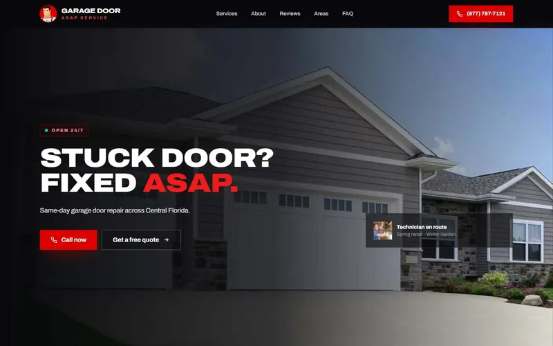
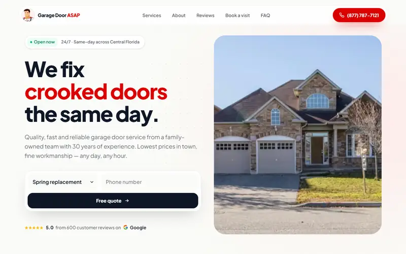

Garage Door ASAP — homepage designs
Two homepage concepts with different styles, built on real content and photos from garagedoorasapservice.com. Pick one to open it.

Design 1 · Dark & light
Night Shift
Bold and industrial. A garage door rolls up to open the page, then dark and light sections alternate, each with its own layout and motion: service scenes, a crew banner, a review deck and a live city map.
Open design →
Design 2 · Light
Daylight
Friendly and editorial. A photo-collage hero with quick quote, services bento, a symptom diagnosis tool, the 29-point tune-up checklist, and Mr. ASAP.
Open design →